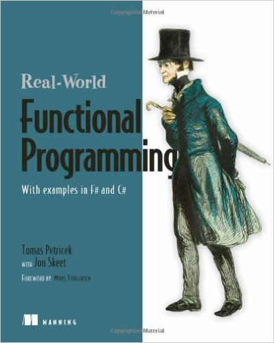
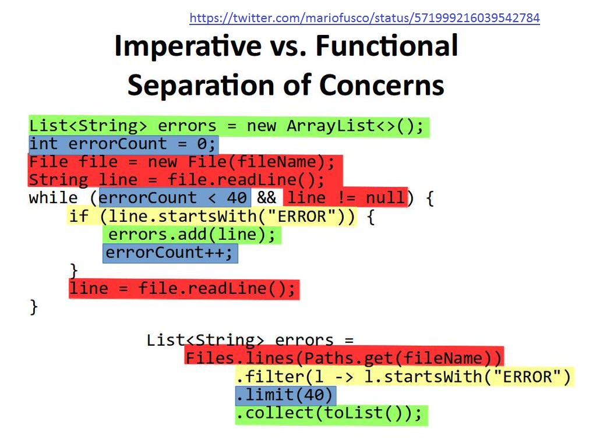
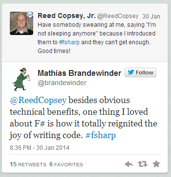
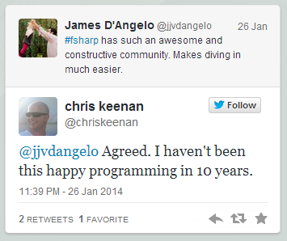
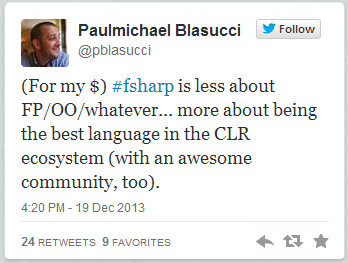
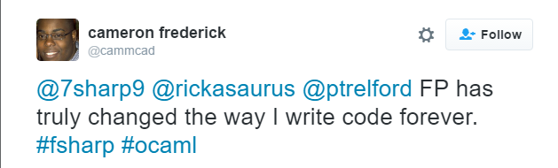

Presentation made by FsReveal
Install F# for workshops
http://fsharp.org/use/windows/
If you have VS 2015, but no F# installed:
https://github.com/Microsoft/visualfsharp/issues/544#issuecomment-221505568
Overview of the various programming paradigms according to Peter Van Roy
Functional programming is a style of programming that emphasizes the evaluation of expressions, rather than execution of commands. The expressions in these languages are formed by using functions to combine basic values.
Hutton

Other important FP languages: Haskell, Erlang, Scala, Clojure
1: 2: |
|
1: 2: 3: 4: 5: 6: 7: 8: 9: 10: 11: 12: 13: 14: 15: 16: |
|
"Referential transparency"
1: 2: 3: 4: 5: 6: 7: 8: 9: 10: 11: 12: 13: 14: 15: |
|
"Isolation"
1: 2: 3: 4: 5: 6: 7: 8: 9: 10: 11: 12: 13: 14: 15: 16: 17: 18: 19: |
|
1: 2: 3: 4: 5: 6: 7: 8: 9: 10: 11: 12: 13: 14: 15: 16: |
|
1: 2: 3: 4: 5: 6: 7: 8: 9: 10: 11: 12: 13: |
|




1: 2: 3: 4: 5: 6: 7: 8: 9: 10: 11: 12: |
|
1: 2: 3: 4: 5: 6: 7: 8: 9: 10: 11: 12: 13: 14: 15: 16: 17: |
|
1: 2: 3: 4: 5: 6: 7: 8: |
|
1: 2: 3: 4: 5: 6: 7: 8: 9: |
|
{kind=link}